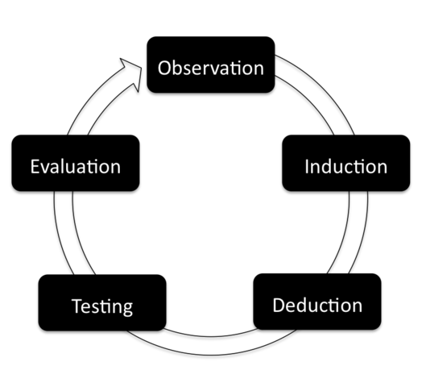
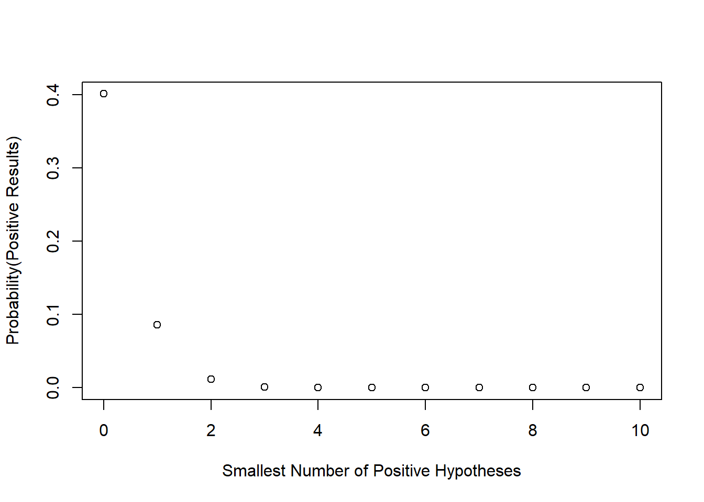

Rethink Significance
To trace the fallacy of use hypothesis testing, I am programming the examples in Dr. Adrianus D. de Groot’s paper The meaning of "significance" for different types of research. This paper is published in 1956 in the Dutch journal Nederlands Tijdschrift voor de Psychologie en Haar Grensgebieden. Adrianus De Groot is Dutch psychologist and chess master. During 1950s and 1960s, he suggested the concept of emperical cycle for the researchers who use the statistical tools in the social and behavioral researches.

Emperical cycle
de Groot’s emperical cycle distinguish two types of emperical research: exploratory research and confirmatory research. Exploratory research aims to formulate the hypotheses that covers the process from observation to induction. Confirmatory research attempts to test the predicited concequences based the hypothesis. Thus a Confirmatory research covers deduction, testing, and evaluation.
In the time de Groot started his academic career, the protocol of hypothesis testing has been completed by the leading statisticans, Ronald Fisher, Jerzy Neyman, and Egon Pearson. Psychologists at that time learned and used p value to evaluate the results. de Groot in his paper has suggested that the hypothesis testing is the appropriate tool to evaluate the result of a confirmatory reserach. He in the same paper also discussed the problems that perhapes happen when the hypothesis testing was used to decide the available hypotheses in an exploratory research. There are two cases of explorartoy research discussed in his paper. One has finite hypotheses, and the other has infinite hypotheses. Both cases show up in front of every researcher in anytime and in anywhere. Many researcher struggle how to pick the available hypotheses up according to the data in hands.
Exploratory research has finite hypotheses
The section title in de Groot’s paper is Hypothesis testing research for multiple hypotheses. He presumed the case as follow:
We give N as the number of hypotheses yet to be tested. Every hypothesis is going to be evaluated by the hypothesis testing. We also give n as the number of hypothese successfully passed the test. Every hypothesis have the probability .05 pass the test. This probability refers to the type 1 error in the present hypothesis testing.
Today we have 10 hypotheses (N = 10) to be evaluated by the data. Consider all the consequences, we can calculate all the probabilities given the counts of positive hypotheses.
require(xtable)
N <- 10
n <- 0:10
alpha <- .05
REJECT_P <- 0
PASS_P <- rep(0,length(n))
for(k in n){
REJECT_P = REJECT_P + choose(N,k)*alpha^k*(1 - alpha)^(N - k)
PASS_P[k+1] = 1 - REJECT_P
}
SUCCESS = data.frame(n,PASS_P)
colnames(SUCCESS) <- c("n", "Probability(Positive Results)")
print(xtable(SUCCESS), include.rownames = FALSE, type = "html" )| n | Probability(Positive Results) |
|---|---|
| 0 | 0.40 |
| 1 | 0.09 |
| 2 | 0.01 |
| 3 | 0.00 |
| 4 | 0.00 |
| 5 | 0.00 |
| 6 | 0.00 |
| 7 | 0.00 |
| 8 | 0.00 |
| 9 | 0.00 |
| 10 | 0.00 |
plot(PASS_P ~ n, xlab = "Smallest Number of Positive Hypotheses", ylab = "Probability(Positive Results)")
That table is telling us if we wish acquire at least one positive hypothesis, the probability is 0.4012631. That plot shows the probability dramatically decrease with the increasing numbers in our wish. In other words, when we have no precise knowlegde about the use of hyphtesis testing, the more hypotheses we want to induce, the higher risk we get nothing.
Exploratory research has infinite hypotheses
This case is everywhere in this era of big data. de Groot called this case Material-exploration: N becomes unspecified. In his paper, material refers to data because data is a low frequency word in his era. The researchers in his era has realized the best way to deal with this case is to let the data tell the story. The research on this case obviously is an exploratory research. For the researchers in de Groot’s era and in the era of big data, there are two routes to finish this kind of research project. One route is to label and categorize the hypotheses. This route is the hot topic of machine learning in the present data science. The other route is to decide the possible hypotheses. Today the researchers on this route mostly rely on the multiple variate statistical tools.
de Groot suggests the caution to the research that attempts to decide the potential hypotheses. N is infinite because not all hypotheses could be induced in this case. Whe we have 20 testable hypotheses from 200 potential hypotheses. If a researcher confirmed that 10 of the 20 hypotheses have the positive support by the data, based on the type 1 error, he/she has to understand that 5% hypotheses are positive (10/200) but 50% hypotheses are positive (10/20). This caution is like the misuse of golem that is discussed in Statistical Rethingking. In the timing I am writing this note, this caution implied the researchers who are thinking the potential hypotheses are decided assumed that they have finished a emperical circle.
Role of Preregisteration
Decades of misusing the hypothesis testing have resulted in a bad situation we have to faced. There is no clear cutoff between the exploratory research and the confirmatory research. Many published papers in nature are the exploratory researches, but they are packaged in the form of confirmatory research by the authors (editors and reviewers have the responsibility too). This is why de Groot’s originated paper was translated and published 60 years later. This post is one of the fundemental I will cite when I introduce and discuss the preregistration.